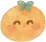

달콤한 귤 한 알, 씩씩한 발걸음!
유생님, 황감제로 떠나 볼까요?
귤 향기 가득한 조선 마을을 달려요. 0
0
3 / 3
귤빛 조선 모험 · 첫 번째 이야기
황감제를 향해, 폴짝!
귤을 모으고 장애물을 넘으며
우리 유생의 여정을 함께해요.
 그림을 불러오는 중…
그림을 불러오는 중… 0
0잠깐 쉬어 가요
유생님, 숨 돌리셨나요?
SPACE 또는 화면 터치로 점프

귤 하나 +100점장애물을 조심해요!달콤한 귤 한 알, 씩씩한 발걸음!
0귤빛 조선 모험 · 첫 번째 이야기
귤을 모으고 장애물을 넘으며
우리 유생의 여정을 함께해요.
그림을 불러오는 중…0잠깐 쉬어 가요

귤 하나 +100점장애물을 조심해요!